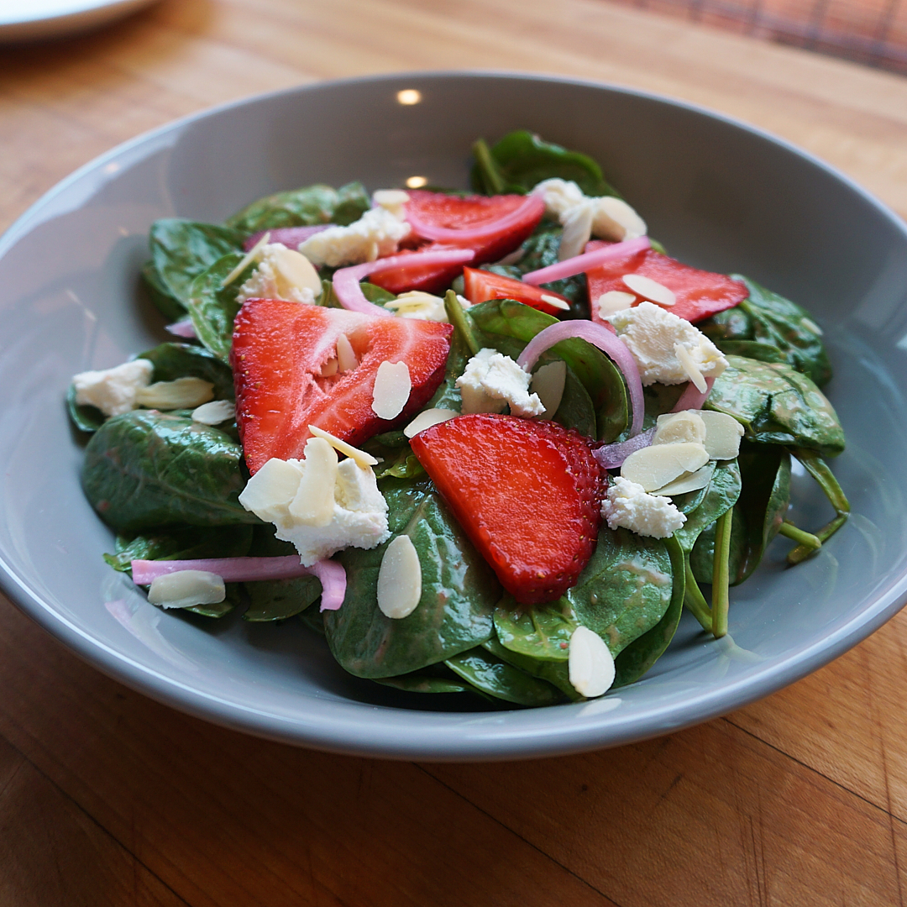

Spinach and Berry Salad


Description
My favorite salads are spinach salads because I don't like lettuce. This salad features berries, goat cheese, and pickled red onions. Use whichever berries look the best at the store. Note strawberries, raspberries, blackberries, or blueberries would all work great here. You do need an immersion blender for the dressing, but a simple balsamic dressing could be substituted if you don't have one. Serves 4 as a first course.
Ingredients
Dressing
- 5g (1 tsp) dijon mustard
- 20g (4 tsp) red wine vinegar
- 30g (a few) berries
- 1/2 tsp kosher salt
- black pepper
- 60g (4T) extra virgin olive oil
Salad
- 8oz baby spinach (washed)
- 4oz strawberries, raspberries, blackberries, or blueberries
- 4oz goat cheese
- 1/4C pickled red onions (drained)
- 1/3C slivered almonds, chopped walnuts, or pecans
Steps
- Add all dressing ingredients to a 16oz mason jar or immersion blender cup. Immersion blend until smooth.
- Toss spinach in a bowl with most of the dressing.
- Divide dressed spinach among 4 salad bowls and garnish with remaining ingredients.
- Drizzle remaining dressing on the salads.
Enjoy!